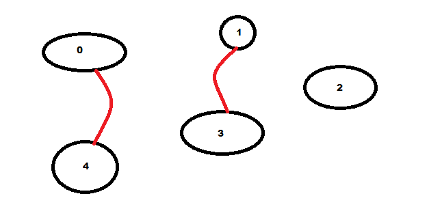

Projet : construire un archipel à moindre coût.⚓︎
Le problème⚓︎
La situation⚓︎
Un certain nombre d'îles isolées souhaient construire des ponts pour relier toutes les îles par voie terrestre. L'objectif est de pouvoir passer d'une île à l'autre sans prendre le bateau. Nous allons donc étudier le cout minimal de liaison des îles. Les 5 iles de l'archipel sont numérotées de 0 à 4 et les coûts de construction des ponts sont les suivants :
| ile 0 | ile 1 | ile 2 | ile 3 | ile 4 | |
|---|---|---|---|---|---|
| ile 0 | inf | 10 | 40 | 11 | 18 |
| ile 1 | 10 | inf | 12 | 15 | inf |
| ile 2 | 40 | 12 | inf | 14 | 20 |
| ile 3 | 11 | 15 | 14 | inf | 15 |
| ile 4 | 18 | inf | 20 | 15 | inf |
La notation inf est utilisée lorsque qla construction du pont n'est pas possible.

Nous allons donc créer des ilôts au fur et à mesure en reliant tout d'abord deux iles ensemble, puis un ilôt à une autre île et ainsi de suite en se posant la question du coût le plus faible à chauqe étape.

Une fois des ponts construits nous obtenons des îlots :
 Dans la situation ci-dessus par exemple, il y a 4 possibilités de relier les ilots 1 et 2. On peut créer un pont entre 0 et 1, entre 0 et 3, entre 3 et 4 ou entre 1 et 4. Si on regarde le tableau des co^ts, c'est le pont entre 0 et 1 qui sera choisi.
Dans la situation ci-dessus par exemple, il y a 4 possibilités de relier les ilots 1 et 2. On peut créer un pont entre 0 et 1, entre 0 et 3, entre 3 et 4 ou entre 1 et 4. Si on regarde le tableau des co^ts, c'est le pont entre 0 et 1 qui sera choisi.

Et ainsi de suite jusqu'à ce que toutes les îles soient reliées :

Les règles de l'implémentaion⚓︎
Les îles seront représentées par des listes contenant le numéro de l'île. Par exemple au départ, lorsque les îles sont isolées :
1 | |
1 2 3 | |
les ponts seront représentés par une liste de tuples représentant les iles à relier :
1 | |
Remarque
Les ponts utlisés dans l'exemple ne sont pas ceux de la solution optimale.
Programmation fonctionnelle⚓︎
On se rappellera ici que les fonctions ne doivent pas modifier de variables globales, ce qui necessitera de passer un peu plus d'arguments. Nous nous autoriserons cependant l'utilisation de boucles.
La fonction construire_un_pont(ilot_1,ilot_2,liste_ilots,ile1,ile2,ponts)⚓︎
Cette fonction prend en paramètre deux îlots et deux îles entre lesquelles on doit construire le pont. Il n'est pas question ici de choisir les îles cela aura été fait en amont. ile1 appartient à l'ilot_1 et ile2 appartient à ilot_2. ces îles ont été choisie car c'est le pont le moins cher pour relié les deux îlots d'après le tableaux couts.
Cette fonction aura donc pour but de modifier la liste liste_ilotspour fusionner les ilot_1 et ilot_2et ajouter le tuple (ile1,ile2) dans la liste des ponts.
Elle retourne la liste_ilots et ponts.
Par exemple :
1 2 3 4 5 | |
1 2 3 | |
La fonction trouver_pont(liste_ilots,couts,ponts)⚓︎
Cette fonction a pour but de trouver le pont idéal entre deux îlots. Elle doit parcourir tous els îlots afin de trouver le pont le moins cher entre deux îots. Imaginons qu'on ait les îlots [0,1], [2,3] et [4]. Le but est de trouver le pont le moins cher pour relier deux îlots quelqu'ils soient. Il faudra donc pour chaque ile de chaque ilot comparer les coûts et sélectionner les deux îles entre lesquelles on décidera de construire le pont.
Ici, nous allons donc comparer les coûts des ponts (0,2),(0,3),(1,2),(1,3),(0,4),(1,4),(2,4) et (3,4). Le pont le moins cher est le pont (0,3) on exécute donc la fonction contruire_pont entre les îles 0 et 3 ce qui aura pour effet de relier le premier et le deuxieme îlot (mais ça c'est le job de la fonction construire_pont).
1 2 3 4 5 6 7 8 9 10 11 | |
La fonction equiper_archipel(n,couts)⚓︎
Cette fonction crée l'archipel (ici on créera une liste de 5 îles) et initialiser la liste des ponts. Elle va se charger de parourir les îlots et de créer les ponts jusqu'à ce que l'archipel ne contienne plus qu'un seul bloc. Elle renvoie la liste des ponts à construire.
1 2 3 4 5 | |
Le programme⚓︎
Il faudra malgré tout ici avoir une variable globale, celle des coûts. on pourrait initialiser le tout dans une fonction main() qui serait la seule à être exécutée mais comme nous ne somme qu'à la moitié du projet, on va simplifier.
1 2 3 4 5 6 7 8 9 | |
Programmation Orientée Objet⚓︎
Nous allons créer deux classes. Une classe ile et une classe construireArchipel.
La classe ile⚓︎
La classe ile permettra de créer les îles et les îlots une fois modifiés, et la la classe construireArchipel contiendra la liste des îles et îlots, des ponts et se chargera de trouver le pont idéal, de le construire et ce jusqu'à ce que toutes les îles soient reliées.
Au départ, une île ne sera composée que d'une île (par exemple [1] est un îlot ne contenant que l'île 1), mais au fur et à mesure des fusions des îlots, l'attribut ile de la classe ile peut en conenir plusieurs.
1 2 3 4 5 6 7 8 | |
__repr__(self) afin de visualier la liste des îles composant les îlots pou débogger le code.
La classe construireArchipel⚓︎
Les fonctions de cette classe font la même chose que leurs homologies dans la partie programmation fonctionnelle. Cela dit, si la structure peut etre similaire, le fait de changer de paradigme vous obligera à en modifie les paramètres, les variables et les retours de fonctions. Soyez vigilants sur les copier-coller.
1 2 3 4 5 6 7 8 9 10 11 12 13 14 15 16 17 18 19 20 21 22 23 24 25 26 27 28 29 30 31 32 33 34 35 | |
Le code principal⚓︎
1 2 3 4 5 6 7 8 9 10 | |
A rendre⚓︎
Vous devez rendre deux fichiers commentés dont le résultat de la situation doit être identique.